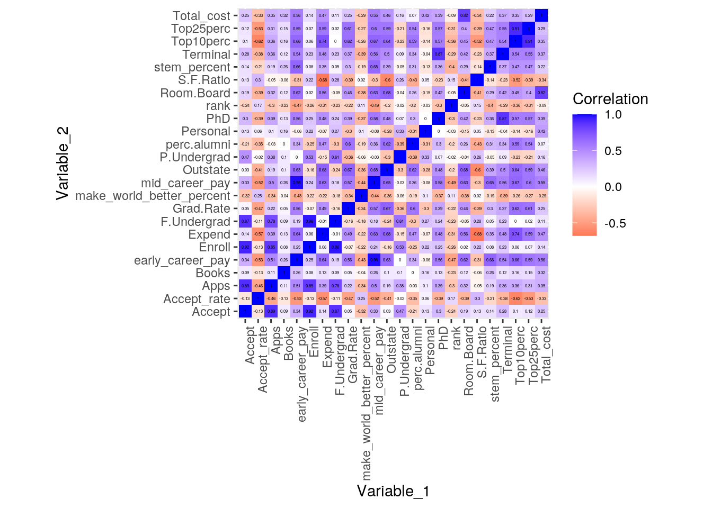
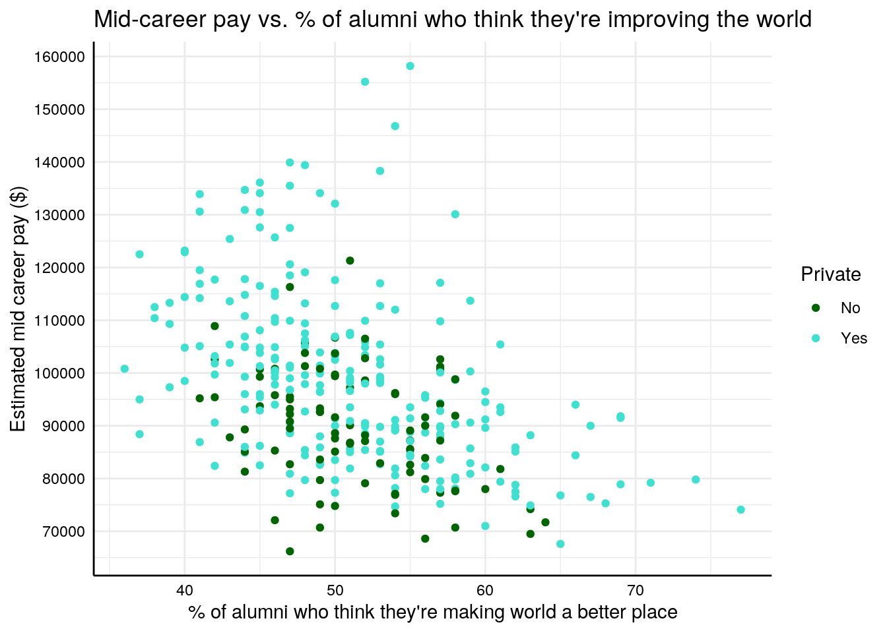
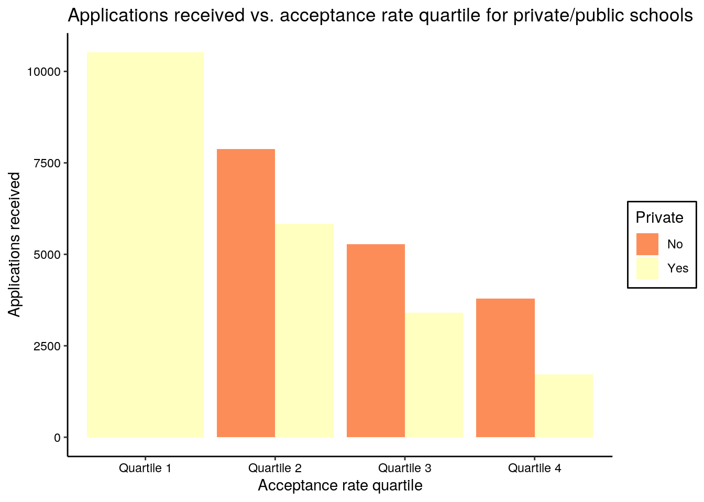
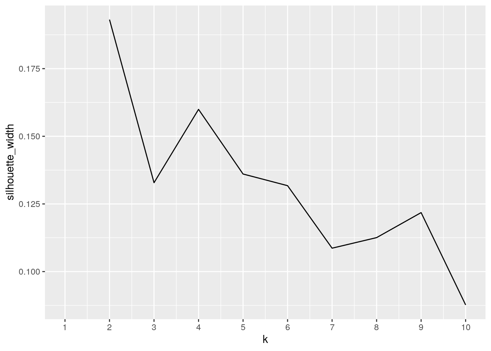
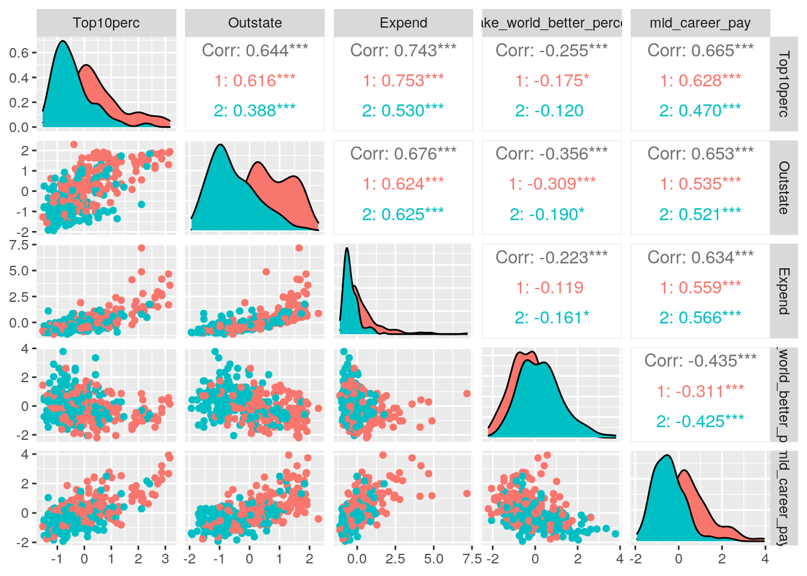
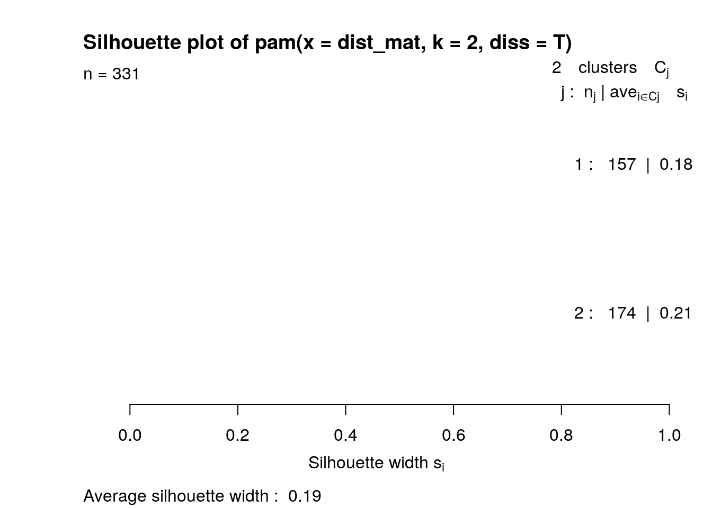

library(tidyverse)
library(ggplot2)
library(cluster)
data1 <- read_csv("College.csv")
# https://www.kaggle.com/smithashivakumar/college
data2 <- read_csv("salary_potential.csv")
# https://www.kaggle.com/jessemostipak/college-tuition-diversity-and-pay?select=salary_potential.csvThe datasets I chose are called “College” and “Salary Potential”, and they were both acquired through the “Kaggle” website. The College dataset comes from the book “An Introduction to Statistical Learning” by James et al. 2013. It contains 19 columns: X1 = school name, Private = yes if private and no if public, Apps = number of applications received, Accept = number of applicants accepted, Enroll = number of new students enrolled, Top10perc = number of new students from top 10% of high school, Top25perc = number of new students from top 25% high school, F.Undergrad = number of full time undergraduates, P.Undergrad = number of part time undergraduates, Outstate = out of state tuition, Room.Board = costs of room and board, Books = estimated book costs, Personal = estimated personal spending, PhD = percent of faculty with PhD, Terminal = percent of faculty with terminal degree, S.F.Ration = student faculty ratio, perc. alumni = Percent of alumni who donate, Expend = instructional expenditure per student, Grad.rate = graduation rate.
The Salary Potential dataset originally came from the US Department of Education, but more specifically from a site called payscale.com. It contains 7 columns: rank = potential salary rank within state, name = school name, state_name = state name, early_career_pay = estimated early career pay in USD, mid_career_pay = estimated mid career pay in USD, make_world_better_percent = percent of alumni that think they are making world better place, stem_percent = percent of student body in STEM. These datasets are interesting to me because they both have some variables that are not commonly known, for example I was interested by the percent of alumni who think they are making a difference in the world, and the estimated personal spending for different schools. I expect there to be an association between the Private/public status of a school and the early or mid career estimated pay. I am also curious if there will be an association between the student faculty ratio and the percent of alumni who think they are making the world a better place.
merged_data <- inner_join(data1, data2, by = c(X1 = "name"))
merged_data2 <- merged_data %>% rename(College_name = X1)
merged_data2 %>% glimpse## Rows: 332
## Columns: 25
## $ College_name <chr> "Agnes Scott College", "Alaska Pacific Univ…
## $ Private <chr> "Yes", "Yes", "Yes", "Yes", "Yes", "Yes", "…
## $ Apps <dbl> 417, 193, 353, 1899, 1267, 4302, 1130, 7313…
## $ Accept <dbl> 349, 146, 340, 1720, 1080, 992, 704, 4664, …
## $ Enroll <dbl> 137, 55, 103, 489, 385, 418, 322, 1910, 951…
## $ Top10perc <dbl> 60, 16, 17, 37, 44, 83, 14, 20, 12, 21, 53,…
## $ Top25perc <dbl> 89, 44, 45, 68, 73, 96, 23, 63, 52, 47, 95,…
## $ F.Undergrad <dbl> 510, 249, 416, 1594, 1306, 1593, 1586, 9940…
## $ P.Undergrad <dbl> 63, 869, 230, 32, 28, 5, 326, 1035, 939, 46…
## $ Outstate <dbl> 12960, 7560, 13290, 13868, 12572, 19760, 99…
## $ Room.Board <dbl> 5450, 4120, 5720, 4826, 4552, 5300, 3090, 2…
## $ Books <dbl> 450, 800, 500, 450, 400, 660, 900, 96, 450,…
## $ Personal <dbl> 875, 1500, 1500, 850, 400, 1598, 1320, 2000…
## $ PhD <dbl> 92, 76, 90, 89, 79, 93, 62, 83, 57, 58, 83,…
## $ Terminal <dbl> 97, 72, 93, 100, 87, 98, 66, 96, 60, 68, 93…
## $ S.F.Ratio <dbl> 7.7, 11.9, 11.5, 13.7, 15.3, 8.4, 11.5, 18.…
## $ perc.alumni <dbl> 37, 2, 26, 37, 32, 63, 18, 14, 5, 21, 33, 1…
## $ Expend <dbl> 19016, 10922, 8861, 11487, 9305, 21424, 109…
## $ Grad.Rate <dbl> 59, 15, 63, 73, 68, 100, 46, 70, 48, 65, 91…
## $ rank <dbl> 14, 3, 18, 7, 15, 10, 21, 15, 13, 10, 19, 2…
## $ state_name <chr> "Georgia", "Alaska", "Connecticut", "Michig…
## $ early_career_pay <dbl> 46000, 50300, 49700, 52100, 48400, 63800, 4…
## $ mid_career_pay <dbl> 83600, 90000, 85900, 99300, 89900, 116500, …
## $ make_world_better_percent <dbl> 57, 67, 62, 44, 52, 45, 51, 47, 54, 55, 57,…
## $ stem_percent <dbl> 26, 6, 2, 23, 15, 32, 7, 9, 7, 2, 19, 12, 1…I chose to do an inner join because I only wanted to keep schools that were found in both datasets, so the schools found in only 1 of the 2 datasets were dropped. This way, during wrangling there would not be rows with many NAs. Additionally, there were enough schools in common between the 2 datasets that keeping only the matching ones still left me with 332 observations which was plenty for my analysis. One potential problem with dropping the non-matches is that the joined dataset may not be fully representative of all the schools in each state.
# filter
merged_data2 %>% filter(Private == "Yes" & mid_career_pay >=
1e+05) %>% n_distinct("College_name")## [1] 100merged_data2 %>% filter(Private == "No" & mid_career_pay >= 1e+05) %>%
n_distinct("College_name")## [1] 17# arrange
merged_data2 %>% arrange(desc(Expend), desc(Grad.Rate)) %>% glimpse## Rows: 332
## Columns: 25
## $ College_name <chr> "Johns Hopkins University", "Wake Forest Un…
## $ Private <chr> "Yes", "Yes", "Yes", "Yes", "Yes", "Yes", "…
## $ Apps <dbl> 8474, 5661, 10705, 13865, 6348, 6411, 8587,…
## $ Accept <dbl> 3446, 2392, 2453, 2165, 2999, 2140, 2273, 4…
## $ Enroll <dbl> 911, 903, 1317, 1606, 922, 1078, 1087, 1236…
## $ Top10perc <dbl> 75, 75, 95, 90, 68, 96, 87, 76, 90, 90, 85,…
## $ Top25perc <dbl> 94, 88, 99, 100, 94, 99, 99, 97, 98, 98, 98…
## $ F.Undergrad <dbl> 3566, 3499, 5217, 6862, 3340, 4481, 3918, 5…
## $ P.Undergrad <dbl> 1569, 172, 83, 320, 39, 28, 32, 192, 146, 5…
## $ Outstate <dbl> 18800, 13850, 19840, 18485, 18930, 20100, 1…
## $ Room.Board <dbl> 6740, 4360, 6510, 6410, 6380, 5975, 6070, 6…
## $ Books <dbl> 500, 500, 630, 500, 500, 725, 550, 600, 675…
## $ Personal <dbl> 1040, 1250, 2115, 1920, 1254, 1600, 1100, 8…
## $ PhD <dbl> 96, 95, 96, 97, 99, 99, 95, 97, 91, 95, 96,…
## $ Terminal <dbl> 97, 97, 96, 97, 99, 99, 99, 98, 96, 96, 100…
## $ S.F.Ratio <dbl> 3.3, 4.3, 5.8, 9.9, 5.3, 10.1, 4.7, 5.0, 8.…
## $ perc.alumni <dbl> 38, 37, 49, 52, 36, 35, 49, 28, 54, 44, 25,…
## $ Expend <dbl> 56233, 41766, 40386, 37219, 36854, 33541, 2…
## $ Grad.Rate <dbl> 90, 89, 99, 100, 90, 94, 98, 96, 99, 97, 92…
## $ rank <dbl> 3, 2, 1, 2, 4, 1, 1, 2, 2, 1, 2, 16, 3, 1, …
## $ state_name <chr> "Maryland", "North-Carolina", "Connecticut"…
## $ early_career_pay <dbl> 67200, 60700, 70300, 74800, 64000, 86300, 7…
## $ mid_career_pay <dbl> 117100, 114800, 138300, 146800, 114200, 155…
## $ make_world_better_percent <dbl> 57, 44, 53, 54, 41, 52, 44, 44, 48, 50, 46,…
## $ stem_percent <dbl> 31, 13, 22, 19, 22, 69, 35, 20, 48, 26, 20,…# group_by
merged_data2 %>% group_by(state_name) %>% summarize(mean(make_world_better_percent)) %>%
head(n = 10)## # A tibble: 10 x 2
## state_name `mean(make_world_better_percent)`
## <chr> <dbl>
## 1 Alabama 61.4
## 2 Alaska 67
## 3 Arizona 56
## 4 Arkansas 54
## 5 California 46.9
## 6 Colorado 50.8
## 7 Connecticut 48
## 8 Delaware 46.5
## 9 Florida 51.7
## 10 Georgia 51# mutate
merged_data2 <- merged_data2 %>% mutate(Accept_rate = (Accept/Apps) *
100)
merged_data2 <- merged_data2 %>% mutate(Total_cost = Room.Board +
Books + Personal)
merged_data2 <- merged_data2 %>% mutate(category_accept_rate = case_when(Accept_rate >=
0 & Accept_rate <= 25 ~ "Quartile 1", Accept_rate > 25 &
Accept_rate <= 50 ~ "Quartile 2", Accept_rate > 50 & Accept_rate <=
75 ~ "Quartile 3", Accept_rate > 75 & Accept_rate <= 100 ~
"Quartile 4"))
# select
merged_data2 %>% dplyr::select(College_name, Accept_rate, Enroll) %>%
arrange(desc(Accept_rate)) %>% head(n = 10)## # A tibble: 10 x 3
## College_name Accept_rate Enroll
## <chr> <dbl> <dbl>
## 1 Emporia State University 100 853
## 2 Mayville State University 100 153
## 3 Wayne State College 100 724
## 4 Arkansas Tech University 99.7 951
## 5 Mount Marty College 98.9 126
## 6 Oklahoma Christian University 98.6 351
## 7 Benedictine College 98.1 222
## 8 Delta State University 97.7 459
## 9 Kansas Wesleyan University 97.6 148
## 10 University of Dubuque 96.9 137# summarize:
merged_data2 %>% summarise(mean(early_career_pay))## # A tibble: 1 x 1
## `mean(early_career_pay)`
## <dbl>
## 1 52837.merged_data2 %>% summarise(sd(Top10perc))## # A tibble: 1 x 1
## `sd(Top10perc)`
## <dbl>
## 1 20.0merged_data2 %>% summarise(median(P.Undergrad))## # A tibble: 1 x 1
## `median(P.Undergrad)`
## <dbl>
## 1 328.merged_data2 %>% summarise(IQR(Expend))## # A tibble: 1 x 1
## `IQR(Expend)`
## <dbl>
## 1 5454.merged_data2 %>% summarise(quantile(perc.alumni, 0.97))## # A tibble: 1 x 1
## `quantile(perc.alumni, 0.97)`
## <dbl>
## 1 54merged_data2 %>% summarise(var(Terminal))## # A tibble: 1 x 1
## `var(Terminal)`
## <dbl>
## 1 162.merged_data2 %>% summarise(max(stem_percent))## # A tibble: 1 x 1
## `max(stem_percent)`
## <dbl>
## 1 86merged_data2 %>% group_by(Private) %>% summarise_all(n_distinct)## # A tibble: 2 x 28
## Private College_name Apps Accept Enroll Top10perc Top25perc F.Undergrad
## <chr> <int> <int> <int> <int> <int> <int> <int>
## 1 No 88 88 88 88 37 51 87
## 2 Yes 244 235 237 219 68 73 236
## # … with 20 more variables: P.Undergrad <int>, Outstate <int>,
## # Room.Board <int>, Books <int>, Personal <int>, PhD <int>, Terminal <int>,
## # S.F.Ratio <int>, perc.alumni <int>, Expend <int>, Grad.Rate <int>,
## # rank <int>, state_name <int>, early_career_pay <int>, mid_career_pay <int>,
## # make_world_better_percent <int>, stem_percent <int>, Accept_rate <int>,
## # Total_cost <int>, category_accept_rate <int># summarizing with group_by, and pivoting
merged_data2 %>% group_by(state_name) %>% summarise(mean_roomboard = mean(Room.Board),
mean_books = mean(Books), mean_personal = mean(Personal)) %>%
pivot_longer(c(mean_roomboard, mean_books, mean_personal),
names_to = "Type of expense", values_to = "Cost") %>%
head(n = 10)## # A tibble: 10 x 3
## state_name `Type of expense` Cost
## <chr> <chr> <dbl>
## 1 Alabama mean_roomboard 3922
## 2 Alabama mean_books 538.
## 3 Alabama mean_personal 1411.
## 4 Alaska mean_roomboard 4120
## 5 Alaska mean_books 800
## 6 Alaska mean_personal 1500
## 7 Arizona mean_roomboard 3728
## 8 Arizona mean_books 620
## 9 Arizona mean_personal 2342
## 10 Arkansas mean_roomboard 3169merged_data2 %>% group_by(state_name, Private) %>% summarise(min_outstate_tuition = min(Outstate)) %>%
pivot_wider(names_from = "Private", values_from = "min_outstate_tuition") %>%
head(n = 10)## # A tibble: 10 x 3
## # Groups: state_name [10]
## state_name No Yes
## <chr> <dbl> <dbl>
## 1 Alabama 4440 6150
## 2 Alaska NA 7560
## 3 Arizona 6746 NA
## 4 Arkansas 3460 5504
## 5 California NA 13226
## 6 Colorado 6198 15192
## 7 Connecticut 5962 11070
## 8 Delaware NA 9890
## 9 Florida 6597 11290
## 10 Georgia 5697 7000Filtering the data revealed that there were 100 private schools, yet only 17 public schools that had an estimated mid-career pay rate greater than $100,000. Although the data presents only an estimation of mid career pay and major/degree likely has a large effect on this mid-career pay, this result still surprised me. I was curious as to whether the school’s educational expenditure per-student would affect the graduation rate, so I arranged the data by descending expenditure and graduation rate. It does not seem that the highest educational expenditures lead to the highest graduation rates. I grouped the data by state and then summarized the mean percent of alumni who think they’re making the world a better place. For mutate, I created a column for acceptance rate by dividing number of students accepted by the number of applications, then multiplied by 100. I also created a column called Total_cost that shows the estimated student costs (aside from tuition) for books, personal expenses, and room/board by summing these columns together. I also created a columnn that categorizes acceptance rate into 4 different bins. I used select to show college names, their acceptance rates, and the number of students enrolled that year.
For summary statistics, I found that the mean estimated early career pay for colleges in this dataset was $52,837. Having 54% of alumni who still donate would put a college in the 97th percentile for this category. I grouped the data by private/public status and found there were many more private schools in this dataset than public. The maximum percent of students in stem at from this dataset was 86%. I used pivot_longer with summarize to view the mean costs of room/board, books, and personal expenses grouped by each state. I used pivot_wider to view the minimum out-of-state tuition for private vs. public schools in each state.
cormat2 <- merged_data2 %>% select_if(is.numeric) %>% cor(use = "pair")
tidycor2 <- cormat2 %>% as.data.frame %>% rownames_to_column("Variable_1") %>%
pivot_longer(-1, names_to = "Variable_2", values_to = "Correlation")
tidycor2 %>% ggplot(aes(Variable_1, Variable_2, fill = Correlation)) +
geom_tile() + scale_fill_gradient2(low = "red", mid = "white",
high = "blue") + geom_text(aes(label = round(Correlation,
2)), color = "black", size = 1) + coord_fixed() + theme(axis.text.x = element_text(angle = 90,
hjust = 1)) Early career pay rate is very positively correlated with mid career pay, as expected. Number of new students enrolled is very positively correlated with both acceptance rate and the number of full time undergraduates. Number of new students from the top 25% of class is very positively correlated with the number of new students from top 10%, but this was also expected. To mention some of the negative correlations, student/faculty ratio is negatively correlated with the school’s educational expenditure per student which makes sense. Out-of-state tuition was also negatively correlated with student/faculty ratio. There is no correlation between book costs and the percent of alumni who donate. There is also no correlation between the number of students from the top 10% of their HS class and the number of full time undergraduates.
colors <- c(No = "darkgreen", Yes = "turquoise")
merged_data2 %>% ggplot(aes(make_world_better_percent, mid_career_pay,
color = Private)) + geom_point() + labs(title = "Mid-career pay vs. % of alumni who think they're improving the world",
x = "% of alumni who think they're making world a better place",
y = "Estimated mid career pay ($)") + theme_minimal() + scale_color_manual(values = colors) +
scale_y_continuous(breaks = seq(0, 160000, 10000)) + scale_x_continuous(breaks = seq(0,
100, 10)) + theme(axis.line = element_line(color = "black",
size = 0.5)) + theme(axis.text = element_text(color = "black"))
This plot illustrates that the highest estimated mid-career pay rates are mostly found from students at private universities. Private schools also had the highest percentages of alumni who think they’re making the world a better place. However, this could be simply because this dataset contains more private schools than public schools. There is not a super strong trend in this data, but interestingly, the schools with the highest percent of alumni who think they’re improving the world corresponded to the lower estimated mid career pay rates. But in general, as the percent of alumni who think they’re improving the world increases, the estimated mid career pay does not increase.
merged_data2 %>% ggplot(aes(x = category_accept_rate, y = Apps,
fill = Private)) + geom_bar(stat = "summary", position = "dodge") +
labs(title = "Applications received vs. acceptance rate quartile for private/public schools",
x = "Acceptance rate quartile", y = "Applications received") +
theme_classic() + scale_fill_brewer(palette = "Spectral") +
theme(axis.text = element_text(color = "black")) + theme(legend.background = element_rect(linetype = "solid",
color = "black")) There were no public schools in this dataset with acceptance rates lower than 25%. Also, this plot shows that the number of applicants decreased as the acceptance rate increased. So schools with more applicants were more selective and had lower acceptance rates, which makes sense because they cannot accept everyone even though many people want to attend these “top tier” schools. Similarly, schools with few applicants had high acceptance rates - either because the school needs students or because students do not want to attend a school that’s “easy” to get into. For example, private schools with very high acceptance rates had very few applicants. In quartiles 2,3, and 4 public schools had more applicants than private schools.
cluster_data <- merged_data2 %>% select(-College_name, -Private,
-state_name, -category_accept_rate) %>% scale()
silhouette_width <- vector()
for (i in 2:10) {
pam_fit <- pam(cluster_data, k = i)
silhouette_width[i] <- pam_fit$silinfo$avg.width
}
ggplot() + geom_line(aes(x = 1:10, y = silhouette_width)) + scale_x_continuous(name = "k",
breaks = 1:10)
dist_mat <- merged_data2 %>% select(-Private, -state_name, -category_accept_rate) %>%
mutate_if(is.numeric, scale) %>% column_to_rownames("College_name") %>%
na.omit %>% dist %>% as.matrix
pam_result <- pam(dist_mat, k = 2, diss = T)
dataset2 <- cbind(cluster_data, cluster = pam_result$cluster) %>%
as.data.frame()
dataset2 %>% group_by(cluster) %>% summarize_if(is.numeric, mean,
na.rm = T)## # A tibble: 2 x 25
## cluster Apps Accept Enroll Top10perc Top25perc F.Undergrad P.Undergrad
## <dbl> <dbl> <dbl> <dbl> <dbl> <dbl> <dbl> <dbl>
## 1 1 0.106 0.00314 -0.122 0.490 0.504 -0.176 -0.238
## 2 2 -0.0960 -0.00286 0.111 -0.445 -0.458 0.160 0.216
## # … with 17 more variables: Outstate <dbl>, Room.Board <dbl>, Books <dbl>,
## # Personal <dbl>, PhD <dbl>, Terminal <dbl>, S.F.Ratio <dbl>,
## # perc.alumni <dbl>, Expend <dbl>, Grad.Rate <dbl>, rank <dbl>,
## # early_career_pay <dbl>, mid_career_pay <dbl>,
## # make_world_better_percent <dbl>, stem_percent <dbl>, Accept_rate <dbl>,
## # Total_cost <dbl>library(GGally)
ggpairs(dataset2, columns = c("Top10perc", "Outstate", "Expend",
"make_world_better_percent", "mid_career_pay"), aes(color = as.factor(cluster)))
plot(pam_result, which = 2)
I first selected only the numeric columns from my dataset, scaled them, and named that data cluster_data. Then, I found out through the silhouette width that 2 clusters would be best for this data, as seen by the plot. I then made a distance matrix with the data, using Euclidean distances. PAM cluster analysis was then performed on the distance matrix and the cluster data was saved to the dataset, which I renamed as dataset2. I then found the cluster means to see which variables were important for differentiating the clusters. A GGally plot was then created using only 5 variables, because using 20+ variables would have been chaotic to visualize. As seen by the GGally plot, the data did not very cluster well. It seems that the Outstate variable separated the data the most. The average silhouette width was 0.19, meaning that no substantial structure was found. For some odd reason, the actual silhouette widths would not show up on the plot.
…